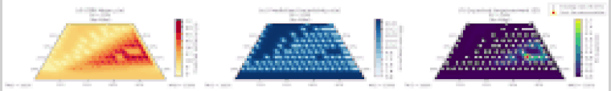

AI4ICME Group
AI for Integrated Computational Materials Engineering (AI4ICME) is a research group dedicated to accelerating materials discovery and design through artificial intelligence and multiscale modeling.

About the Group
The AI4ICME Group explores alloying–processing–structure–properties relationships across structural and energy materials by integrating physics-based simulations—such as CALPHAD, DFT, AIMD, Monte Carlo, and Molecular Dynamics—with Machine Learning, High-Throughput Screening, and experimental validation.
General Research Themes
Phase transformation, precipitation and dissolution kinetics, interfacial segregation, deformation mechanisms, and multiscale modeling of metallic materials.
Computational and data-driven design of magnesium alloys, copper alloys, superalloys, high-entropy alloy coatings, and titanium alloys.
Thermodynamic modeling, high-throughput screening, and machine learning for phase change materials, barocaloric refrigeration, and thermal energy storage.
Screening and thermodynamic/machine-learning design of metal hydrides and energy materials for efficient hydrogen storage and conversion.
News
Recent highlights, milestones, and talks from the AI4ICME Group.
Research
Integrated experimental, theoretical, and computational materials engineering (CALPHAD, DFT, AIMD, Monte Carlo, Molecular Dynamics, Machine Learning, High-Throughput Screening).
Nucleation and growth of intermetallic phases; grain boundary segregation; deformation-induced martensitic transformation; spinodal decomposition; short-range order; twinning nucleation; texture modification; multiscale modeling of nanoparticle-reinforced metal matrix composites; and glass-forming ability.
Design of metal hydrides with high storage capacity and low hydrogenation enthalpy for hydrogen fuel cells via CALPHAD, machine learning, and high-throughput screening, as well as hydride formation and deformation mechanisms.
Construction of CALPHAD thermodynamic databases; high-throughput screening, machine learning, and thermodynamic modeling of organic phase change materials, MOFs, metallic materials, and solid-state phase change / barocaloric refrigeration materials.
Alloy design and multiscale simulation for high-formability/high-strength magnesium alloys, marine and high-temperature oxidation-resistant copper alloys, Ni–Cr–Nb and GH4169D superalloys, high-entropy alloy coatings, and β-titanium alloys.
Publications
Selected peer-reviewed journal articles and patents (* corresponding author, # equal contribution).
First or Corresponding Author
- Z. Li, H. Xiang, Y. Zhang*, R. Shi*, P. K. Liaw, Tribological and corrosion behavior of HVOF-sprayed AlCoCrFeNiTi0.2 high-entropy alloy coating, Surface & Coatings Technology 539 (2026) 133936.
- R. Shi*, R. Chen, Y. Li, J. Jiang, Z. Wu*, A Closed-Loop Multiscale Computational Framework for Predicting Barocaloric Effects: Entropy Decomposition and Transformation Mechanisms, Acta Materialia 317 (2026) 122594.
- D. Wang, R. Shi*, Q. Zhu*, X. Qi, H. Dong, Data-Driven Design of High-Purity Ni-Cr-Nb Master Alloy and Its Application in Scale-Up GH4169D Alloy, High-Temp. Mat. 3(1) (2026) 10003.
- J. Huang, Y. Hu, R. Shi*, Lattice reconstruction and phase transformation characteristics regulation of Sb2Te3 flexible thin films in gradient strain fields, Applied Surface Science (2026) 165797.
Co-Author
- Q. Wang, X. Niu, W. Ning, Z. Zhu, R. Shi, Y. Zhao, Interaction of organic-inorganic hybrid perovskite electron system with lattice system, Materials Today Sustainability 25 (2024) 100617.
- Z. Zhu, W. Ning, X. Niu, Q. Wang, R. Shi, Y. Zhao, Designing High Elastic Modulus Magnesium-Based Composite Materials via Machine Learning Approach, Materials Today Communications 37 (2023) 107249.
Patents
- A. Luo, R. Shi, Magnesium Alloys and Methods of Making and Use Thereof, U.S. Patent US 12,404,569 B2 (Sept. 2, 2025).
Courses
Teaching and curriculum development in materials science, thermodynamics, and AI-enabled materials design.
Phase equilibria, solution and compound models, phase diagram calculation (CALPHAD), nucleation and growth, diffusion and phase transformation kinetics, supported by computational and laboratory modules.
Integrating data-driven machine learning, high-throughput workflows, and structural characterization (such as XRD and phase analysis) for accelerated materials discovery.
People
Current
Principal Investigator
Principal Investigator. Ph.D. in Materials Science and Engineering, University of Nevada, Reno (2016); B.S. in Metallurgical Engineering, University of Science and Technology Beijing (2011).
Alumni
Software
Computational workflows, thermodynamic/kinetic databases, and machine-learning tools for ICME.
Thermodynamic and atomic mobility assessment workflows and database modules for lightweight Mg/Al alloys, Cu alloys, multicomponent melts, and solid-state thermal energy storage / organic phase change materials.
Download / 下载Data-driven composition-to-property models and high-throughput screening pipelines for barocaloric and phase-change materials, β-titanium alloys, Ni–Cr–Nb master alloys, and hydrogen storage hydrides.
Download / 下载Openings
Opportunities for students and researchers interested in AI4ICME and materials science.
The AI4ICME Group welcomes inquiries from prospective graduate students, undergraduate research interns, and collaborators with backgrounds in Materials Science and Engineering, Metallurgy, Physics, Chemistry, Applied Mathematics, or Computer Science / Machine Learning.
Focus Areas for Prospective Researchers
- Computational thermodynamics (CALPHAD), DFT, AIMD, and molecular dynamics of phase transformations and solid-state refrigeration/thermal storage materials
- Machine learning interatomic potentials, data-driven alloy design, and high-throughput materials screening
- Alloy design, microstructure evolution, and processing–property optimization of lightweight metals and functional materials
Contact Us
Address, email, phone, and academic profile links.
Principal Investigator: Renhai Shi, Ph.D.
Address: 104 Zhihui Avenue, Minhou, Fuzhou, Fujian 350109, China
Mobile: (+86) 13459190403
ResearchGate: www.researchgate.net/profile/Renhai_Shi